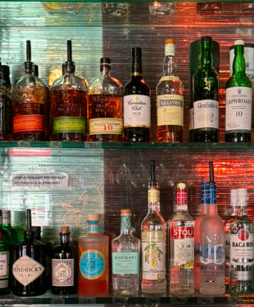

Drop Inn i hjertet af Københavns centrum er et klassisk spillested for intim livemusik – mere præcist på hjørnet af Kompagnistræde – Hestemøllestræde, tæt på resterne af stenalderlandsbyer fra Ertebøllet-tiden fra 4.000 år før Kristus. I dag huser Drop Inn ikke bare jazz, men en bred vifte af musikgenrer og er blevet backstage-rum for musiklivet, der blander sig med stamgæster, turister og bohemer. Flashback: Ikoniske Drop Inn åbnede i 1934 som en traditionel restaurant med kabaret- underholdning, men fandt sin form, da Else Thomsen – flankeret af de legendariske tjenere Carl og Herluf og den smukke Annie Bel-Kher – gjorde det til et fristed for datidens progressive unge , bohemer, skuespillere, musikere, kunstnere og politisk engagerede stamgæster, der nød livet til tonerne af levende jazzmusik. Drop Inn blev dengang kaldt “Den røde ged” af de danske veteraner fra den Spanske Borgerkrig omkring stambordet og var et åndehul, der bød mangfoldigheden velkommen. Dengang talte man om “dødsruten” eller “elefant-vandringen” til “elefantkirkegården” – hvor gode mennesker fra alle samfundslag pendlede fra Bobibar og Andy’s til Drop Inn i døgndrift til daggry.
